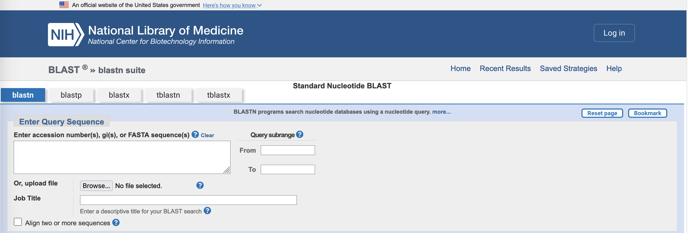

3 16S
3.1 16S identification of your isolate
In this part of the workshop, you will use publicly available 16S sequence databases and resources to obtain an identification for your isolate.
Please ensure that you have downloaded the 16S sequence file for your isolate (isolate_16S.fasta) to a suitable location on your computer.
3.2 NCBI Blast
BLAST is a bioinformatics tool developed by NCBI (the National Center for Biotechnology Information) that takes as input a query sequence and searches for similar sequences in a reference database. BLAST ranks matches from most (first) to least similar. The tool can be downloaded and run on your own machine, or it can be used through the NCBI-BLAST webservice.
NCBI are the repository of record for published biological sequence data, and provide several BLAST databases, including one that contains all publicly-available 16S sequence data. You will use the NCBI-BLAST webservice, with your isolate’s 16S sequence as the query, to search this database.
- Percent coverage: what proportion (percentage) of the query is similar enough to the match to which it has been aligned
- Percentage identity: what proportion of the aligned region is identical in both the query and the reported match
- Expectation (E-value): the number of matches you would expect by chance from this database that are at least as similar as this one, if you used the query sequence to search in a database of the same size made up of completely random sequences
3.2.1 Analysing your data
- Go to the NCBI Blast webpage. You will see the landing page.
- Select
Nucleotide BLAST. This will take you to a new BLASTN search.

- Upload your
isolate_16S.fastafile, or copy and paste the contents of the file into the box markedEnter accession number(s), gi(s) or FASTA sequence(s).
- In the section headed
Choose Search Set, select rRNA/ITS databases. This will autopopulate the database with16S Ribosomal RNA sequences (Bacteria and Archaea), NCBI’s complete database of 16S rRNA sequences.
NCBI do not manually curate (i.e. confirm sequence quality or correct identity) the data in their databases. Whole genome sequences are checked for completeness by looking at the collection of annotated proteins, and also by classification algorithms for taxonomic placement, but 16S sequences are not. Also, NCBI contains a large amount of historical data which may have been annotated using outdated or superseded taxonomies. The names of BLAST matches in 16S databases should be treated with some caution.
- Click on the
BLASTbutton (towards the bottom of the page) and wait for the result to appear.
- What organism is the top hit to your query?
- How similar is the top hit to your query (
Per. ident/percentage identity column)? What is the alignment coverage? - What are the remaining top five matches to your query?
- How similar are the top five matches to your query sequence?
- What conclusion would you draw about the identity of your isolate from this BLAST search?
3.3 SILVA
SILVA is a curated, quality-checked database of rRNA sequence data that has been run by the Liebniz Institute DSMZ German Collection of Microorganisms and Cell Cultures for about two decades. The SILVA site provides a number of online tools and services, including the ACT service that enables users to search the database with their own rRNA sequences to find the best matches and identify their organism.
- SILVA rRNA database project
- SILVA Alignment, Classification, and Tree (ACT) webservice
- ACT online tutorial
3.3.1 Analysing your data
- Go to the SILVA ACT (Alignment, Classification, and Tree) service
- Upload your
isolate_16S.fastafile, or copy and paste the contents of the file into the box markedInput data. - Check the box marked
Search and classify, but leave all the other options as they are.
- Enter a name for your job in the field marked
Job Name:(e.g. “BM432 Block A workshop” or “blood isolate”)
- Click on the
Run Toolbutton and wait for the result to appear.
While the job is waiting it will appear in the Aligner Taskmanager as Queued, then Starting, then Processing. It may take a couple of minutes to produce a result.
- When the job is complete, select your result in the
Alignment Result Table, and click onDisplay Classification
You may need to adjust the widths of the headers in the result table to see the full classification
7. Click on Export to CSV (lower left of Alignment Result Table) to download the classification result. You can view this file in Excel or in a plain text editor.
- What is the taxonomic identity of the last common ancestor (LCA) that SILVA assigns to your isolate (
lca_tax_slvorLCA tax. SILVAcolumn - this is the last column of data in the file)? - How similar (
Identitycolumn) does SILVA say your isolate is to that last common ancestor sequence?
3.4 Summary
You have used two different databases, and two different techniques, to assign taxonomic identity to a 16S sequence. Are the results consistent with each other?
- Do the BLAST and SILVA analyses give the same taxonomic identity for your 16S sequence?
- If the two results differ, how do they differ?
- If the results differ, how important do you think is the difference between the results?
- What is your current opinion about the identity of your isolate? Have you revised it since the BLAST search? How confident are you in the identification?
Now you have a possible identification from 16S, you should continue the classification of your isolate by using Multi-Locus Sequence Typing (MLST) to try to gain a more precise taxonomic placement. Click on the link to MLST (here, or below), to get started.